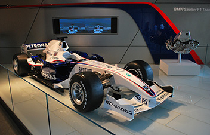
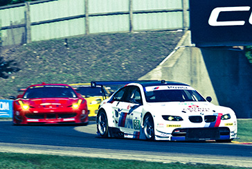
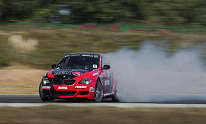

Over the years, BMW has been known to produce not only luxurious cars, but also some of the highest performing cars on the market. This page will cover 3 of the many racing disciplines BMW is involved in.
Formula 1
BMW was involved in the F1 racing series for nearly 2 decades. It all started when a racing team came to them needing an engine supplier for their cars. From there, BMW began developing F1 engines and slowly grew their presence in the F1 scene. In 1985, BMW made what is argued as the most powerful engine in the history of Formula 1. This motor started as an 80 horsepower 4 cylinder motor out of an average vehicle they produced. By the time they were done with it, they had increaded the power nearly 20 fold, resulting in a motor that produced around 1,400 horsepower. The actual horsepower number is unknown due to the fact that they highest the dynamometer went at the time was 1,280 hp. BMW only stayed in the F1 scene until 2009 due to a few unsucessful seasons and the recession.
Road Racing
BMW competes in many of the worlds largest road racing series like the 24 hours of Lemons, and the World Touring Car Championship. However, the largest base for BMW racing would have to be the BMW CCA. This is the BMW Car Club of America which a club racing orginzation dedicated to only BMW vehicles. They hold track events all over the country where the average person can come. They do not have to be professional racecar drivers like all these other racing divisions, they just need a BMW CCA license. This club makes racing BMWs more accessible to a much larger population because it allows them to actually get out and drive their cars instead of just watching it.
Drift Racing
BMWs are also very common in the drift racing scene. They are well suited to this type of driving due to their suspension design and rear wheel drive. BMWs can been seen at small grassroot events driven by amatuer drivers all the way up to Formula Drift events driven by the top professionals in the world. One of the most well known Formula Drift drivers, Chelsea Denofa, has made his mark on the scene from behind the wheel of a BMW. Drifting is normally dominated by Japanese cars but more and more people are starting to realize the potential BMWs have for this discipline.